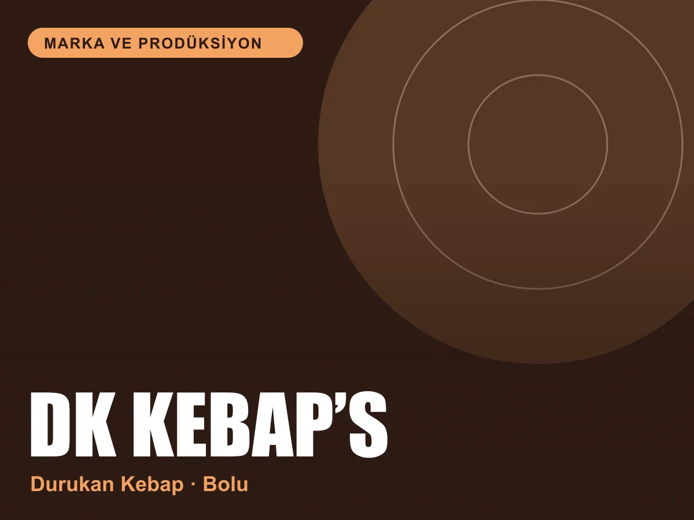

Marka ve prodüksiyon
DK Kebap’s
Bolu’da Durukan Kebap için iştah açan bir görsel dünya ve sosyal medya vitrini.

Marka
DK Kebap’s, Bolu Borazanlar Mahallesi’nde hizmet veren Durukan Kebap’ın markası. Kebabın yanında meze, tatlı, pizza ve gyros gibi seçenekler de sunuyor.
Instagram’da fotoğraf, karusel ve kısa videolarla menü canlı tutuluyor; müşteri paylaşımları da hesabın bir parçası.
Hesapta neler var
Kebap’s
Ana ürünlerin yakın plan, iştah açan çekimleri.
Meze ve tatlı
Sofranın tamamlayıcıları için ayrı hikâye başlıkları.
Reels ve kısa videolar
Hareketli içerikle ürünün sıcaklığını ve servisini gösteren videolar.
Sizden Gelenler
Müşterilerin paylaşımlarını marka vitrinine taşıyan bölüm.
Proje bilgileri
- Müşteri
- DK Kebap’s · Durukan Kebap
- Hizmet
- Marka dili, prodüksiyon, sosyal medya
- Konum
- Borazanlar Mah. 401. Sk. No: 5/C-11, Merkez / Bolu
- @dkebaps14
Bilgiler markanın herkese açık kanallarından derlenmiştir.